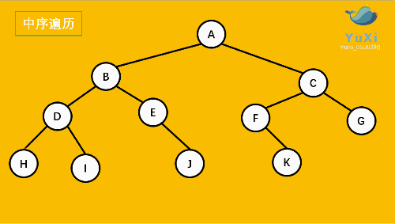
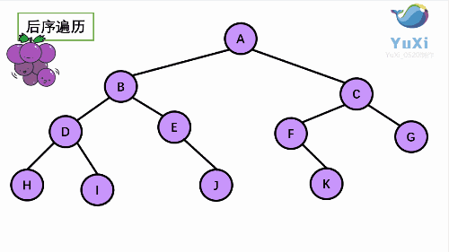

二叉树
题目列表
遍历方法
前序、中序、后序遍历
二叉树的前序、中序、后序遍历都采用了 深度优先搜索 , 而层次遍历采用了 广度优先搜索 。递归的思路比较简单，迭代的思路其实就是将入栈的过程显示表现了出来。
前序知识
前序遍历可以想象成，小人从树根开始绕着整棵树的外围转一圈 ，经过结点的顺序就是先序遍历的顺序
中序遍历可以想象成，按树画好的左右位置 投影 下来

后序遍历就像是剪葡萄，我们要把一串葡萄剪成一颗一颗的。还记得我们先序遍历绕圈的路线么？就是 围着树的外围绕一圈 ，如果发现一剪刀就能剪下的一颗葡萄（注意 必须是一颗葡萄 ），就把它剪下来，组成的就是后序遍历了。

144.二叉树前序遍历
94.二叉树中序遍历
145.二叉树后序遍历
102.二叉树层序遍历
该题有两种思路:
按照正常的层次遍历, 在奇数层倒序数组后再添加到 results;
直接利用双端队列的特性, 这里写第二种方法.
def zigzagLevelOrder ( self , root : Optional [ TreeNode ]) -> List [ List [ int ]]:
from collections import deque
results = []
if root is None :
return results
layer = 0
queue = deque ([ root ])
while queue :
result = []
if layer % 2 == 0 :
# 偶数层
for _ in range ( len ( queue )):
node = queue . popleft ()
result . append ( node . val )
if node . left :
queue . append ( node . left )
if node . right :
queue . append ( node . right )
else :
# 奇数层
for _ in range ( len ( queue )):
node = queue . pop ()
result . append ( node . val )
if node . right :
queue . appendleft ( node . right )
if node . left :
queue . appendleft ( node . left )
layer += 1
results . append ( result )
return results
法1: 该题可以采用二叉树的层序遍历, 仅把每一层的最后一个元素加入结果列表;
法2: 右子树先序遍历法, 按照 根结点 → 右子树 → 左子树 的顺序访问. 对于每一层来说，在这层见到的第一个结点一定是最右边的结点。
层序遍历 右子树先序遍历
def rightSideView ( self , root : Optional [ TreeNode ]) -> List [ int ]:
from collections import deque
results = []
if root is None :
return results
queue = deque ([ root ])
while queue :
size = len ( queue )
for i in range ( size ):
node = queue . popleft ()
if node . left :
queue . append ( node . left )
if node . right :
queue . append ( node . right )
# 队尾元素加入
if i == size - 1 :
results . append ( node . val )
return results
def rightSideView ( self , root : Optional [ TreeNode ]) -> List [ int ]:
def dfs ( root , results , depth ):
if root is None :
return
if len ( results ) == depth :
results . append ( root . val )
depth += 1
dfs ( root . right , results , depth )
dfs ( root . left , results , depth )
results = []
depth = 0
dfs ( root , results , depth )
return results
路径问题
二叉树路径问题可以分成两类: 自顶向下 或 自底向上 .
自顶向下 : 从某一个节点(不一定是根节点)，从上向下寻找路径，到某一个节点(不一定是叶节点)结束, 相关题目有:
自底向上 : 从任意节点到任意节点的路径, 通常这类问题采用后序遍历的思想。相关题目:
题目：给你二叉树的根节点 root 和一个表示目标和的整数 targetSum 。判断该树中是否存在 根节点到叶子节点 的路径，这条路径上所有节点值相加等于目标和 targetSum 。如果存在，返回 true ；否则返回 false。叶子节点 是指没有子节点的节点。
题目: 路径 被定义为一条从树中任意节点出发，沿父节点-子节点连接，达到任意节点的序列。同一个节点在一条路径序列中 至多出现一次 。该路径 至少包含一个 节点，且不一定经过根节点。路径和 是路径中各节点值的总和。给你一个二叉树的根节点 root ，返回其最大路径和。
思路 : 对于一棵树中以某节点为根节点的最小子树, 形成的路径可以分成四种情况:
root
root + left
root + right
root + left + right
上述四种情况中, 如果当前结点不是根结点，那么第 4 种情况是不能去更新当前结点的最大路径和的，因为会形成分支。但是在最终比较最大路径时，该种情况不能忽略。
通过不断更新叶子结点到当前结点的最大路径和求取当前结点的最大路径和。
class Solution :
def __init__ ( self ):
self . result = - float ( 'inf' ) # 全局变量, 动态地更新结果
def maxPathSum ( self , root : Optional [ TreeNode ]) -> int :
def dfs ( node ):
if node is None :
return 0
# 如果左右子树提供的值为负, 则舍弃
lval = max ( 0 , dfs ( node . left ))
rval = max ( 0 , dfs ( node . right ))
# 更新节点值, 需要考虑 root, 即 root + left + right
self . result = max ( lval + rval + node . val , self . result )
# 返回节点的最大贡献值
return max ( lval , rval ) + node . val
dfs ( root )
return self . result
其他例题
当前节点的高度为左子树高度与右子树高度的最大值加1, 表示为 \(h_{node}= \max({h_{left}, h_{right}}) + 1\) ;
叶节点的左孩子和右孩子都为 NULL, 可默认其左右孩子高度都为 -1.
def isBalanced ( self , root : Optional [ TreeNode ]) -> bool :
def height ( node ):
if node is None :
return 0
left_height = height ( node . left )
right_height = height ( node . right )
# 若左子树或右子树为非平衡二叉树, 则能够将 -2 逐层向上反馈给其父节点, -2 为标识符号
if left_height == - 2 or right_height == - 2 :
return - 2
# 若左子树与右子树的高度差大于1, 则该节点不是平衡二叉树
if abs ( left_height - right_height ) > 1 :
return - 2
return max ( left_height , right_height ) + 1
if height ( root ) == - 2 :
return False
return True
给定一个二叉树, 找到该树中两个指定节点的最近公共祖先。
class Solution :
def lowestCommonAncestor ( self , root : 'TreeNode' , p : 'TreeNode' , q : 'TreeNode' ) -> 'TreeNode' :
if root is None :
return root
# 找到结点 p 或者结点 q
if ( root is p ) or ( root is q ):
return root
lchild = self . lowestCommonAncestor ( root . left , p , q )
rchild = self . lowestCommonAncestor ( root . right , p , q )
# lchild 和 rchild 都不为空, 说明 p 和 q 一边一个
if lchild and rchild :
return root
# rchild 为空, 只需看 lchild
if lchild and ( rchild is None ):
return lchild
# lchild 为空, 只需看 rchild
if rchild and ( lchild is None ):
return rchild
# lchild 和 rchild 都为空
return None

{kind=link}
{kind=link}